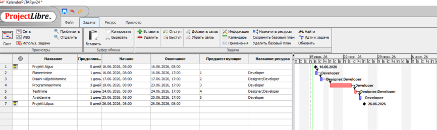

Diagrammide loomine ja vaated ProjectLibre's
ProjectLibre pakub visuaalselt selgeid graafikuid projekti kulgemise, kriitilise tee ja ressursside koormuse jälgimiseks.
1. Gantt diagramm (Gantt Chart)
Peamine vaade on Gantt diagramm, mis kuvatakse automaatselt ülesannete sisestamisel vahekaardil Ülesanne -> Gantt. Diagrammil on selgelt näha ülesannete järjekord (nt. Planeerimine, Disaini väljatöötamine) ja nendega seotud ressursid.
